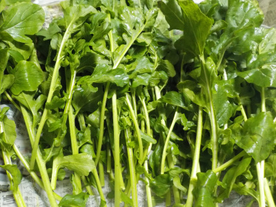
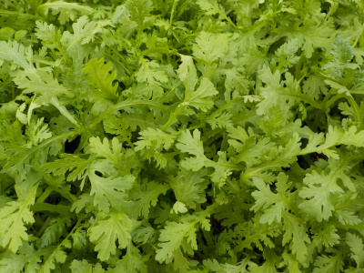
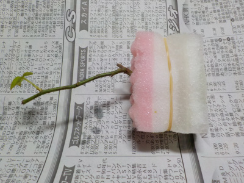
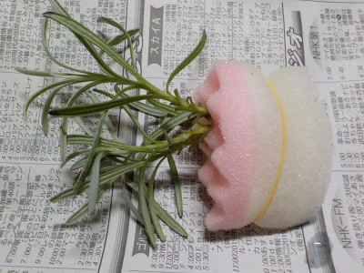
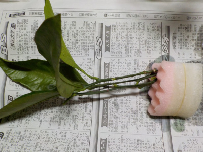
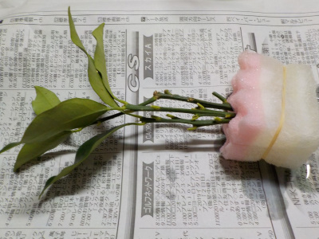
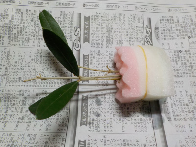
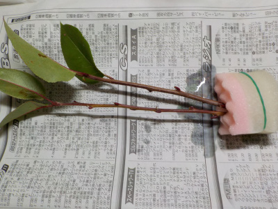
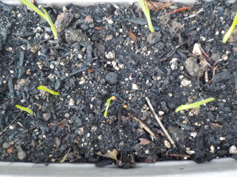
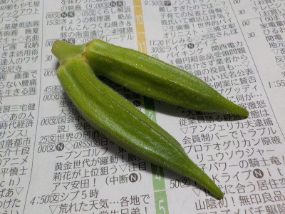

数年ぶりにルッコラを育てました。
2019/10/20
しばらく育てていませんでした。
癖があるので沢山食べれないんですよね。後、他の食材と合わせにくい。

久々に収穫するととてもいい香りでした。
あるといいけど、沢山あると困る野菜だな。
2019/10/20
しばらく育てていませんでした。
癖があるので沢山食べれないんですよね。後、他の食材と合わせにくい。

久々に収穫するととてもいい香りでした。
あるといいけど、沢山あると困る野菜だな。
2019/10/20
収穫前の春菊は綺麗だ。

でも葉物野菜は洗うのが面倒。
2019/10/20
スポンジを使って挿し木をしました。
切った木をスポンジではさんで水につけています。たまの水やりでいいので楽々です。

バラです。
クレマチスです。

ラベンダーです。

みかんです。

キンカンです。

オリーブです。

ドウダンツツジです。
何個成功するかな。
1週間経った感想ですが、みかんは葉っぱが落ちて無理っぽいです。
クレマチスは寒くなったら枯れるんだろうなー。
2019/10/06
球根植えて1週間で芽が出てきました。

芽がない状態からにょきにょき出てくるのは、成長がわかりやすくていいですね。
この調子でドンドン大きくなって欲しいです。
2019//10/06
双子？二股？

どうやってできたんでしょう。
花が2つあったのか、実が分かれたのか。
過去の日記
畑仕事じゃないよ。